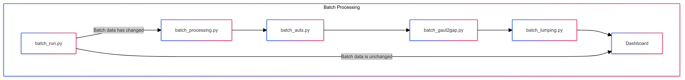

Batch processing

Dashboard users can toggle between 'User Uploaded Data' and 'Pre-loaded Data'.
The 'Pre-loaded data' consists of processed network data that users can toggle between to demonstrate the operation of the dashboard. The processed data originates from network data associated with the paper “Dimension-reduction of dynamics on real-world networks with symmetry.
This data is generated through running batch_processing.py, you can do this by running
python -m dsdp-lumping batch
compute_file_hash(filepath)
Computes the MD5 hash of the specified file.
Parameters:
filepath (str): The path to the file for which the MD5 hash will be calculated.
Returns:
str: The MD5 hash of the file as a hexadecimal string.
Source code in dsdp-lumping/__batch_run__.py
10
11
12
13
14
15
16
17
18
19
20
21
22
23
24 | def compute_file_hash(filepath):
"""
Computes the MD5 hash of the specified file.
Parameters:
filepath (str): The path to the file for which the MD5 hash will be calculated.
Returns:
str: The MD5 hash of the file as a hexadecimal string.
"""
hash_md5 = hashlib.md5() # Create a new MD5 hash object
with open(filepath, "rb") as f: # Open the file in binary mode
for chunk in iter(lambda: f.read(4096), b""): # Read file in chunks of 4096 bytes
hash_md5.update(chunk) # Update the hash with each chunk
return hash_md5.hexdigest() # Return the computed hash as a hex string
|
has_data_changed(DATA_FILES, HASH_FILES)
Checks if any data files have changed by comparing stored hashes with current hashes.
Parameters:
DATA_FILES (list): A list of paths to the data files to be checked.
HASH_FILES (dict): A dictionary mapping each data file path to its corresponding hash file path.
Returns:
bool: True if any data file has changed or if any hash file is missing; otherwise, False.
Source code in dsdp-lumping/__batch_run__.py
26
27
28
29
30
31
32
33
34
35
36
37
38
39
40
41
42
43
44
45
46
47
48
49 | def has_data_changed(DATA_FILES,HASH_FILES):
"""
Checks if any data files have changed by comparing stored hashes with current hashes.
Parameters:
DATA_FILES (list): A list of paths to the data files to be checked.
HASH_FILES (dict): A dictionary mapping each data file path to its corresponding hash file path.
Returns:
bool: True if any data file has changed or if any hash file is missing; otherwise, False.
"""
for data_file in DATA_FILES: # Iterate through each data file
hash_file = HASH_FILES[data_file] # Get corresponding hash file
if not os.path.exists(hash_file):
return True # No hash file means data has not been processed
# Compute the current hash of the data file
with open(hash_file, 'r') as file:
stored_hash = file.read().strip()
current_hash = compute_file_hash(data_file)
if current_hash != stored_hash:
return True # If the current hash doesn't match the stored hash, the data has changed
return False # If all hashes match, data has not changed
|
main()
Main function to process network data files.
This function performs the following steps:
1. Sets up paths and identifies data files to process.
2. Checks if any data files have changed by comparing file hashes.
3. If no changes are detected, processing is skipped.
4. If changes are detected:
- Runs various processing scripts (batch_auts, batch_gaut2gap, batch_lumping).
- Updates visualizations with vizprocessing.
- Stores new file hashes to track processed data.
Returns:
None
Source code in dsdp-lumping/__batch_run__.py
68
69
70
71
72
73
74
75
76
77
78
79
80
81
82
83
84
85
86
87
88
89
90
91
92
93
94
95
96
97
98
99
100
101
102
103
104
105
106
107
108
109
110
111
112
113
114
115
116
117
118
119 | def main():
"""
Main function to process network data files.
This function performs the following steps:
1. Sets up paths and identifies data files to process.
2. Checks if any data files have changed by comparing file hashes.
3. If no changes are detected, processing is skipped.
4. If changes are detected:
- Runs various processing scripts (`batch_auts`, `batch_gaut2gap`, `batch_lumping`).
- Updates visualizations with `vizprocessing`.
- Stores new file hashes to track processed data.
Returns:
None
"""
current_file_path = os.path.abspath(__file__)
base_path = os.path.join(current_file_path, '..')
base_path = os.path.normpath(base_path)
# Define the path to the .scy files
data_path = os.path.join(base_path,'data','external','1_network_data','networkrepository','*.scy')
# Get a list of all data files matching the pattern in the data path
DATA_FILES = glob.glob(data_path)
# Create a dictionary mapping each data file to its corresponding hash file
HASH_FILES = {file: f"{file}_hash.txt" for file in DATA_FILES}
if not has_data_changed(DATA_FILES,HASH_FILES): # Check if any data files have changed
print("Processing has already been completed for all data files.")
else:
print("Running saucy")
batch_auts.main()
print("Running gaut2gap...")
batch_gaut2gap.main()
print("Running lumping...")
batch_lumping.main()
print("Processing pre-loaded networks...")
vizprocessing.main()
#Store the new hashes after successful processing
store_data_hashes(DATA_FILES,HASH_FILES)
print("Processing complete. Data hashes updated.")
return
|
store_data_hashes(DATA_FILES, HASH_FILES)
Stores the current hashes of the data files in their corresponding hash files.
Parameters:
DATA_FILES (list): A list of paths to the data files.
HASH_FILES (dict): A dictionary mapping each data file path to its corresponding hash file path.
Returns:
None
Source code in dsdp-lumping/__batch_run__.py
51
52
53
54
55
56
57
58
59
60
61
62
63
64
65
66 | def store_data_hashes(DATA_FILES,HASH_FILES):
"""
Stores the current hashes of the data files in their corresponding hash files.
Parameters:
DATA_FILES (list): A list of paths to the data files.
HASH_FILES (dict): A dictionary mapping each data file path to its corresponding hash file path.
Returns:
None
"""
for data_file in DATA_FILES:
current_hash = compute_file_hash(data_file)
with open(HASH_FILES[data_file], 'w') as file:
file.write(current_hash)
return
|